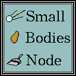

| system |
| home page |
| Publications, free advice, job opportunities, practical links. Since our start in 1984, the expert advisement offered by the New York State SBDC is often recognized as the premier business assistance program in the state. And thanks to our partners in the public and private sectors, our services are free of charge. Visit our Frequently Asked Questions section, or click here. . |
|  |